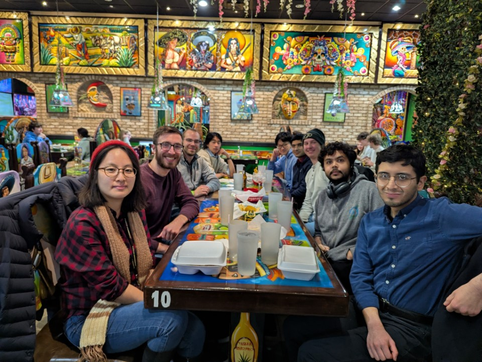

CQEM Lab - Undergraduate Researcher
The CQEM Lab is lead by prof. Roth about Computational Electromagnetic and Quantum Computing. Click the title for more detail.

Welcome to my personal page. My name is Xinyu Liu, a junior undergrad at Purdue University Studying Computer Engineering.
I mainly use this site to document what I have done and what I have thought.
The CQEM Lab is lead by prof. Roth about Computational Electromagnetic and Quantum Computing. Click the title for more detail.
The project include digital design of USB 1.1 Bulk Transfer, Fir-filter, and USB receiver. Click the title for more detail.
This is a embedded project, Health Checker. Click the title for more detail.
The Audio Equalizer is able to adjust the gain of different frequencies for a music being played. Click the title for more detail.